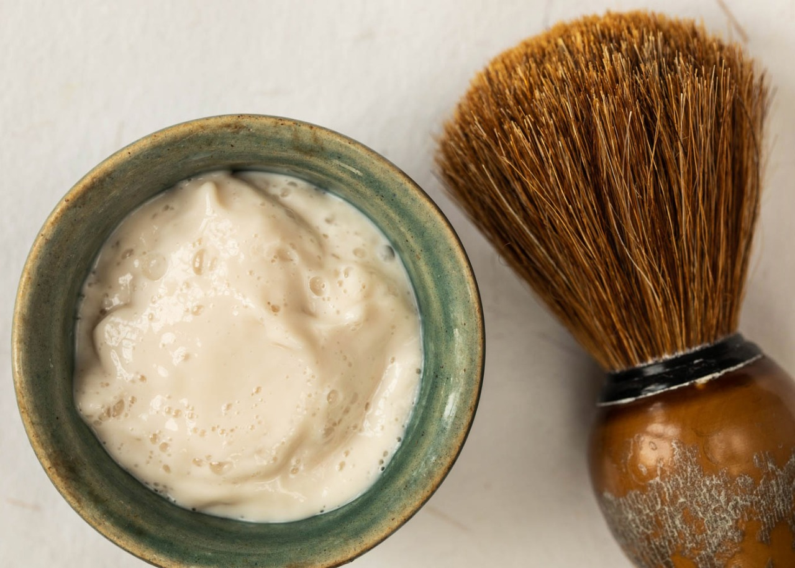

Jabones
Ducha / Manos
Realizados con glicerina vegetal y aditivos naturales de calidad alimenticia, sin sulfatos, ni detergentes, con colorantes de origen vegetal y aromas de aceites esenciales.
- Normal
- Piel Seca
- Piel grasa
Especiales

- Piel Atopica
- Íntimo
- Granitos
- Exfoliante
- Celulitis
Con glicerina vegetal, aditivos naturales y aceites escenciales.
Con manzanilla, yogur y té verde. Sin aroma
A base de carbón
Para pies, rodillas y codos
Con café----(falta info)
Otros productos
- Pasta de dientes
- Desodorante
- Espuma/Gel para afeitar(con Brocha)
Arcilla caolín, infusión, aceite escencial
Arcilla caolín, almidón, bicarbonato, óxido de zinc y aceite escencial
Gel de lino, infusión de romero, emulsionante, aceite jojoba, manteca Karité, Aloe vera, glicerina vegetal y goma xantana
NO es jabón. Con la brocha se hace espuma y luego se pone en la cara.
